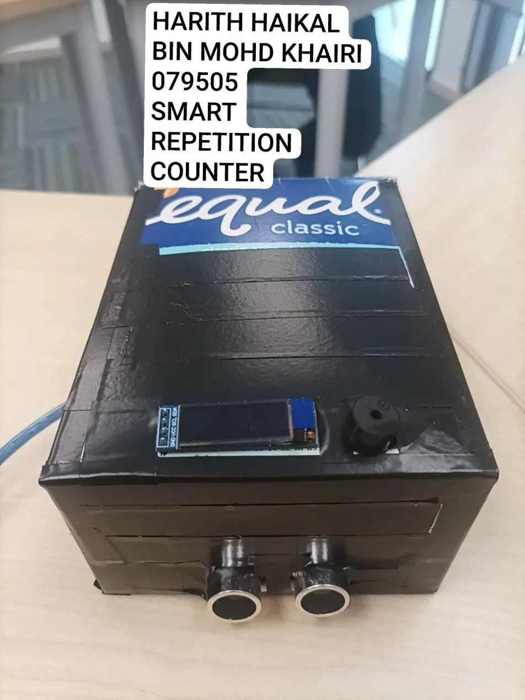
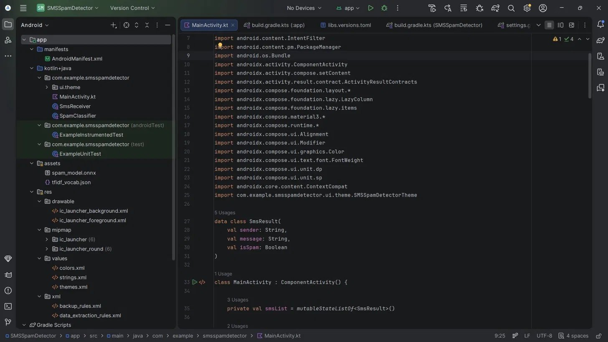
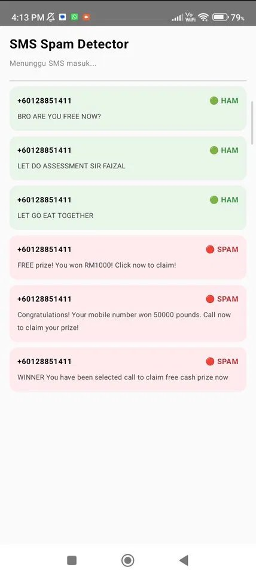
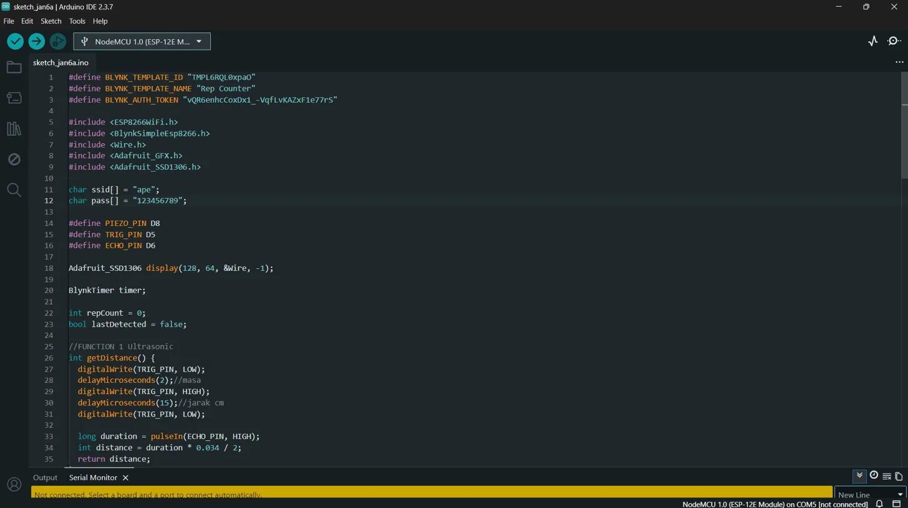
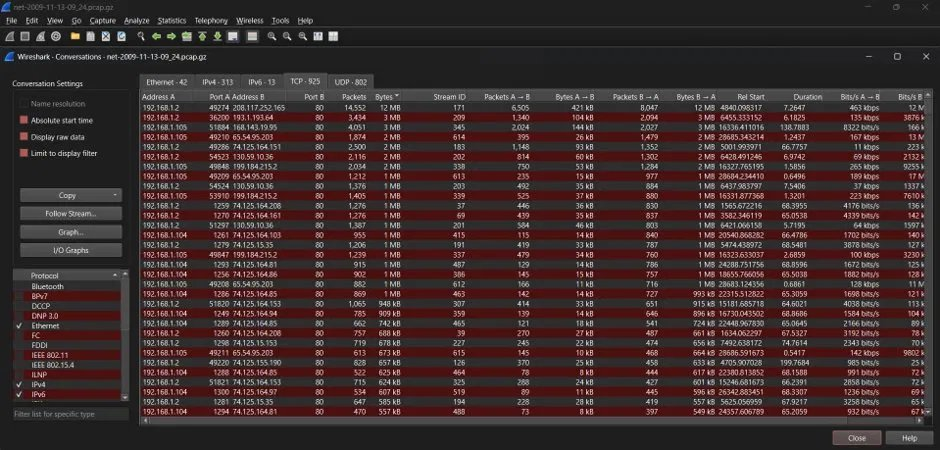
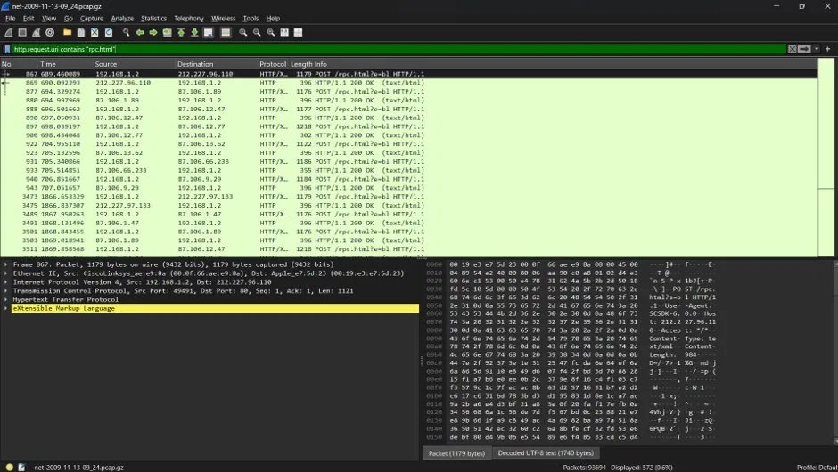

// status: open_to_work
root@portfolio:~$ whoami
HARITH HAIKAL
BIN MOHD KHAIRI
Bachelor of Computer Science
(Computer Network Security) with Honours
Universiti Sultan Zainal Abidin · UniSZA
root@portfolio:~$ whoami
Bachelor of Computer Science
(Computer Network Security) with Honours
Universiti Sultan Zainal Abidin · UniSZA
Computer Network Security student aiming for a career in network security operations.
To secure an employment opportunity where I can apply the knowledge and skills gained throughout my studies in computer network security. I am keen on gaining practical, real-world experience, sharpening my technical and communication skills, and contributing positively to an organisation. I work well under pressure, manage my time effectively, and am a committed team player.
// target_role
I chose the SOC Analyst role because it sits at the intersection of everything I have been building toward in my degree — networking fundamentals, packet-level analysis, digital forensics, and basic offensive-security tooling. It is a realistic entry point for a fresh graduate in network security, and it gives me a foundation to later specialise in cloud security or incident response.
Every organisation that runs a network — banks, telcos, government agencies, e-commerce platforms — now needs people watching that network around the clock. The SOC Analyst role is the front line of that defence: the first person to notice when something looks wrong. With cyberattacks in Malaysia and globally increasing every year, demand for SOC analysts continues to grow, and it is widely recognised as one of the most accessible entry points into a long-term cybersecurity career, with a clear path toward roles such as Incident Responder, Threat Hunter, or Cloud Security Engineer.
// self_evaluation
| Area | My Current Level | Industry Requirement | Gap / Action |
|---|---|---|---|
| Networking fundamentals | Solid foundation (Cisco Networking Academy: IP, routing, switching, troubleshooting) | CCNA-level knowledge expected | Sit for CCNA certification |
| Packet analysis | Used Wireshark for coursework / forensics exercises | Confident daily use to spot anomalies | Practise with public PCAP datasets weekly |
| SIEM tools | No hands-on exposure yet | Familiarity with Splunk / QRadar / similar | Complete a free SIEM fundamentals course (e.g. Splunk Free) |
| Security certification | None yet | CompTIA Security+ commonly required | Study and sit for Security+ within final year |
| Scripting / automation | Basic Python, Java, SQL (used in projects) | Scripting for log parsing & automation | Build small Python scripts for log analysis |
| Linux command line | Exposure via Kali Linux for security tools | Comfortable daily CLI usage | Practise CLI tasks regularly, not just GUI tools |
| Communication & reporting | Strong — leadership & secretarial experience | Clear incident write-ups for non-technical readers | Maintain this strength; apply it to lab reports |
// roadmap
// projects_courses_certificates
A working selection from my courses, certifications and personal projects — including Cisco Networking Academy training, network packet analysis with Wireshark, an IoT smart repetition counter, and an Android spam-detection app.






// dream_company: cybersecurity_malaysia
CyberSecurity Malaysia is the national agency responsible for protecting Malaysia's critical information infrastructure. As someone who chose to specialise in Network Security, working here would mean contributing directly to the country's digital safety — not just to a company's bottom line.
Because the work has a clear national purpose. CyberSecurity Malaysia handles real incident response, digital forensics and security awareness at a national scale — areas I have already been introduced to through my degree (digital forensics with FTK/Autopsy, network analysis with Wireshark, and Cisco networking training). I want to grow in an environment where my work directly protects Malaysian organisations and citizens.
I bring a solid networking and forensics foundation from Cisco Networking Academy and my coursework, hands-on project experience (an IoT-based smart repetition counter and an Android spam-detection app), and a habit of finishing what I start. I am also used to documenting and presenting work clearly — a skill built from years of taking meeting minutes and handling administrative tasks as a club secretary.
Because I am a fast learner who takes ownership. As President of Kadet Koreksional, I was responsible for leading a unit and organising events — that taught me to follow through under pressure. Combined with my technical foundation in networking, forensics and basic security tooling, I am ready to be trained into a productive SOC-level analyst quickly.
Networking fundamentals (IP addressing, routing, switching, troubleshooting), exposure to security and forensics tools (Nmap, Burp Suite, Kali Linux, FTK, Autopsy, Wireshark), basic programming (Python, Java, SQL) for automation and analysis, and communication skills built through leadership and secretarial roles.
Strengths: integrity and honesty, a positive attitude, fast learning, and emotional intelligence — qualities I rely on whether I'm leading a unit or working in a fast-paced part-time job.
Weaknesses: I do not yet hold an industry security certification (Security+ or CCNA) and my hands-on professional experience so far has been outside the IT field. I am addressing both directly — by studying for Security+ during my final year and by building personal lab projects to gain practical, IT-relevant experience before I graduate.
Because I combine a real technical foundation with a track record of reliability — shown through part-time jobs, leadership roles, and self-driven projects completed outside of class requirements. I am honest about what I don't know yet, and I actively work to close those gaps rather than wait to be told.